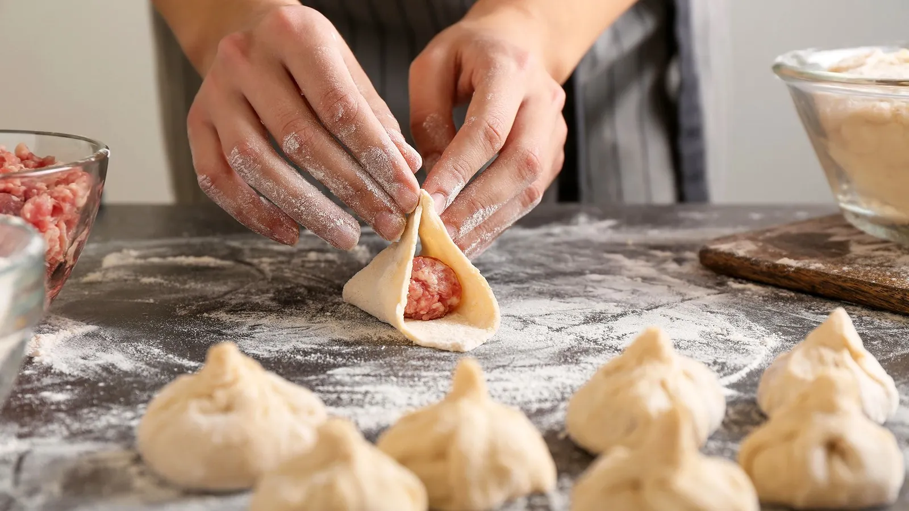

If we talk about Georgian Kitchen, the one of the first dish any mentions will be Khinkali, although it has not invented in Georgia and as many other dumplings comes from China. So before we find out why it has the main place in Georgian Cousins, let’s see the route which the dumplings have gone through thousand years before arriving to Georgia.
As the legend says, the first dumpling in the world, Jiao zi, was invented in ancient China by famous Chinese doctor – Zhang Zhongjing to save people from frostbite. It was made with all kinds of fillings such as mutton, hot pepper and some medicinal materials and really helped poor people to keep warm in cold winter. Probably because of that Jiao zi has got mystical meaning and is the main dish for Chinese New Year Eve since then. Many years later Mongols learned how to make dumplings from Chinese people and found out that they were very convenient for travel. So dumplings became inseparable victuals for Mongolian warriors. During their invading trips in the 13-14th centuries those warriors took dumplings to Siberia and Caucasus. Since then Jiao zi has turned into: Pelmeni in Russia, Vareniki in Ukraine, Piorogi in Poland and Ravioli in Italy, Kreplachi in Israel, Khingal in Azerbaijan, Khinkali in Georgia and etc…The ingredients of all of these dishes are almost the same, but they are still tremendously different from one another. Maybe because that each country has given to them it’s own “soul” and magic. Dumplings brought by Mongols to Siberia were hunter’s food at first and have got dry filling, because they were much more convenient for traveling in that way. Later they have been spread from Siberia to Russia and from Russia to several countries of Europe, but the filling remained the same. That’s why Pelmeni, Vareniki, Ravioli, Piorogi and etc. have much more in common with one another than with their Caucasian cousins. In Caucasus Mongolian dumplings have significantly different history: they were sheep-breeders food firstly and have been made from lamb mainly. As sheep-breeders stayed at one place for some time and were not permanently on the way, they added water in the filling of the food and have got a very special and delicious new “ingredient” – the juice of the dumping in return. The juicy dumplings have been spread everywhere in Caucasus and later on in Turkey as well.